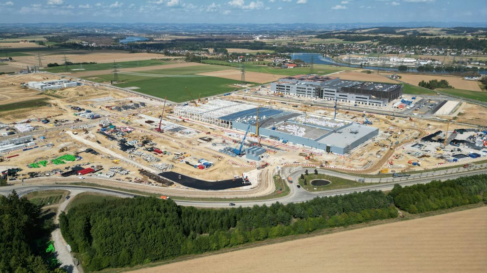

From the lot to the unit: moving crews and visitors across industrial sites.
A refinery turnaround can put 3,200 people on site a day. Each one has to get from outside the fence to a unit inside it, twice a shift. That trip rarely shows up in the schedule. It shows up on the timesheet.
When Federated Co-operatives Limited started its $140 million turnaround at the Co-op Refinery Complex in Regina, Saskatchewan in 2024, it expected about 3,200 people on site each day at peak, and it warned the public that peak traffic around the plant would come at shift change, early morning and early evening.
Each of those people had to get from somewhere outside the fence to a unit inside it.
That trip rarely shows up in the turnaround schedule. It shows up on the timesheet, twice a shift.
Why are contractor parking lots so far from the work?
Usually on purpose. Process areas, laydown yards, and active construction zones are no place for thousands of personal vehicles, so large sites push parking out to the edge or off site entirely.
Neste's Porvoo refinery in Finland is a good example. For its 2024 turnaround, Neste set up a temporary parking area for contractors and ran continuous shuttle buses from there to the turnaround site.
That's a sensible setup. It keeps traffic off the site and gives security one front door. It also makes the trip from car to work face longer, and somebody has to own it. One construction parking firm's guidance is that most crews do fine within a quarter to a half mile, and anything past half a mile usually calls for a shuttle. In some cases, union rules can cap the walking distance too.
Where does the time actually go?
Buses are good at the long haul from a remote lot to the main gate. Inside the fence is a different story.
A full-size coach often can't get into a tight process unit or a muddy laydown yard. So past the gate, crews walk, or pile into pickups and carts that run whenever someone's free to drive.
And when each contractor handles its own transportation, the vehicles run inefficiently. Keith Dillard of Onpoint, a turnaround transportation provider, wrote in BIC Magazine that under that setup workers can only ride their own crew's van or bus, so half-filled vehicles are the norm. He also noted that a 200,000-barrel-per-day refinery can go from about 500 people on site to 2,000 during a turnaround.
Here's a rough way to think about the cost. Say 1,000 workers each lose 15 minutes getting from their car to the work and 15 minutes getting back. That's 500 labor hours a day spent in transit. On a turnaround where every day offline costs the refinery production, those hours add up fast.
Data center construction has the same problem at a bigger scale
The data center boom has created some of the largest single-site workforces in the country. CrewLink, a workforce transportation company, writes that big projects often hit peak labor of 1,000 to 3,000 tradespeople during MEP installation. A Virginia state study found about 1,500 workers on site at peak for a single data center building, with a full campus taking up to five years. We've covered the people-moving side of that boom before.
The parking problem is built into the product. As WhereiPark's Joshua Eisen put it, data centers are "vast in scale, but require minimal staffing once operational." Nobody builds permanent parking for a construction crew that will be gone in a few years. So crews park far away, and the walk across the site gets long.
What about safety?
Long walks and ad hoc rides carry their own risks. Crews leaving after a long shift are tired, and on round-the-clock projects, fatigue is one of the hazards that risk-management firm Gallagher Bassett flags on data center sites. A dozen pickups and carts shuttling people one load at a time also means more vehicles crossing paths with pedestrians and equipment.
A fixed loop with marked stops cuts that down. Fewer vehicles, predictable paths, and stops the site safety team places where it wants people standing.
Planning a turnaround, a construction peak, or a plant event?
FlexTram plans fixed routes around your site's traffic plan and safety rules, sizes the fleet to the shift change, and supplies the vehicles on rental, lease, or as a turnkey plan.
Plant tours and visitor events have their own inside mile
Crews aren't the only people who need to move across an industrial site. Plants host tours, launch events, supplier days, family days, and media visits, and those guests can't wander a production floor on foot.
Automakers worked this out years ago. Toyota's Georgetown, Kentucky plant has more than 8 million square feet under roof, so its general tour runs on a motorized tram, and as of 2019 about 35,000 visitors a year took it. Hyundai's Alabama plant also runs its tours on trams, capped at 16 visitors per tour. When Toyota opened tours at its Indiana plant in 2010, visitors watched a short film and then rode a tram on a 20-minute tour.
Those are permanent programs with permanent equipment. Most plants don't have one, and most visitor events don't justify building one. A vehicle launch or a one-day customer event needs to move a lot of people safely for a short window, and then it's done.
That's work FlexTram has done for a major automaker, and it's a good fit for the equipment. It shows up, runs a planned route for the event, and goes away. We wrote about the mechanics of that in the plant tour post.
How FlexTram fits on an industrial site
FlexTram runs fixed routes with posted stops: remote lot to gate, gate to staging, staging to the work face, or visitor center through the plant. One tow vehicle pulls up to 27 people with a single driver, and the units handle gravel, dirt, and grass as well as pavement. ADA access comes standard.
The equipment deploys in hours and can be stored when the job winds down, which matches how industrial work actually happens. A turnaround runs a few weeks. A construction peak runs a season. A plant event runs a day. We plan the routes around your site's traffic plan and safety rules, size the fleet to the shift change, and adjust once we see where people actually collect.
See more on our warehouse and logistics page and factory and facility tours page, or reach out directly about refinery, plant, or construction work.
The turnaround clock doesn't stop while the crew is walking to the unit.
— The FlexTram Team
Frequently asked questions
Why are contractor parking lots so far from the work on refineries and construction sites?
Usually on purpose. Process areas, laydown yards, and active construction zones are no place for thousands of personal vehicles, so large sites push parking to the edge or off site. For its 2024 turnaround, Neste's Porvoo refinery set up a temporary contractor parking area and ran continuous shuttle buses to the site. Construction parking guidance puts the comfortable walking range at a quarter to a half mile; past half a mile usually calls for a shuttle, and in some cases union rules cap the distance.
How much labor time does the walk from the lot to the unit cost?
A rough way to think about it: if 1,000 workers each lose 15 minutes getting from their car to the work and 15 minutes getting back, that's 500 labor hours a day spent in transit. On a turnaround where every day offline costs production, those hours add up fast. A 200,000-barrel-per-day refinery can go from about 500 people on site to 2,000 during a turnaround.
Why don't shuttle buses solve the problem inside the fence?
Buses are good at the long haul from a remote lot to the main gate. A full-size coach often can't get into a tight process unit or a muddy laydown yard, so past the gate crews walk or pile into pickups and carts that run whenever someone is free to drive. When each contractor handles its own transportation, workers can only ride their own crew's vehicle, so half-filled vans are the norm.
How do automakers move visitors through plant tours?
On trams. Toyota's Georgetown, Kentucky plant has more than 8 million square feet under roof and runs its general tour on a motorized tram, with about 35,000 visitors a year as of 2019. Hyundai's Alabama plant runs tours on a tram capped at 16 visitors. Toyota's Indiana plant opened tours in 2010 with a short film followed by a 20-minute tram ride. Those are permanent programs; most plants don't have one, and a one-day launch or customer event doesn't justify building one.
How does FlexTram fit on an industrial site?
FlexTram runs fixed routes with posted stops: remote lot to gate, gate to staging, staging to the work face, or visitor center through the plant. One tow vehicle pulls up to 27 people with a single driver, handles gravel, dirt, and grass as well as pavement, and includes ADA access as standard. The equipment deploys in hours and stores when the job winds down, which fits a turnaround of a few weeks, a construction peak of a season, or a plant event of a day.
Related reading
Put the lot-to-unit trip on a schedule.
FlexTram offers rentals, long-term leases, and turnkey transportation plans for refineries, manufacturing plants, data center construction, and other large industrial sites.